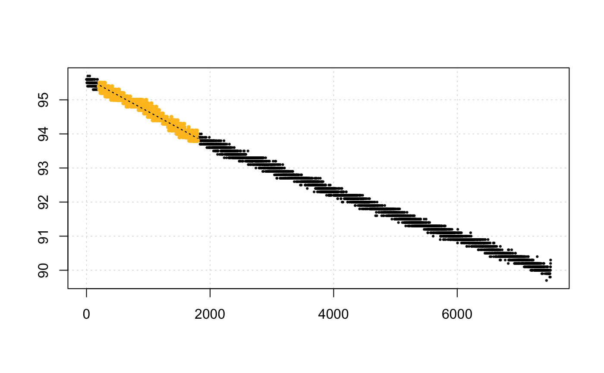
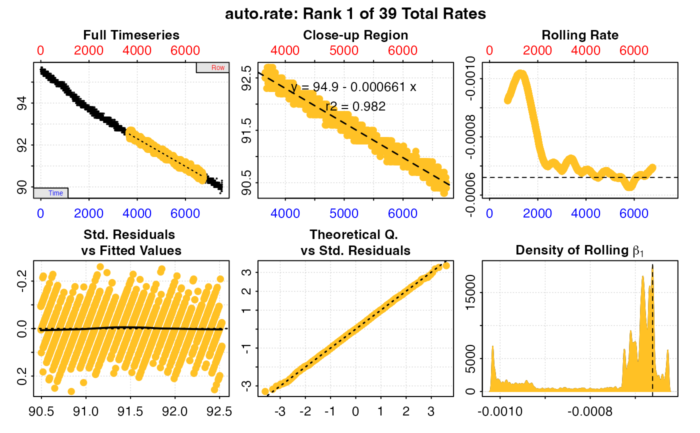

R/convert_rate.R
convert_rate.RdConverts a unitless rate derived from calc_rate(), calc_rate.int(),
auto_rate(), auto_rate.int(), adjust_rate(), or
calc_rate.bg() into an absolute rate (i.e. whole chamber or whole
specimen), or mass-specific rate (i.e. normalised by specimen mass), or
area-specific rate (i.e. normalised by specimen surface area) in any common
unit.
convert_rate(
x,
oxy.unit = NULL,
time.unit = NULL,
output.unit = NULL,
volume = NULL,
mass = NULL,
area = NULL,
S = NULL,
t = NULL,
P = NULL,
plot = FALSE,
...
)numeric value or vector, or object of class calc_rate,
calc_rate.int, auto_rate, auto_rate.int, adjust_rate, or
calc_rate.bg. Contains the rate(s) to be converted.
string. The dissolved oxygen unit of the original raw data
used to determine the rates in x.
string. The time unit of the original raw data used to
determine the rates in x.
string. The output units to convert the input rates to. Should be in the correct order: "Oxygen/Time" or "Oxygen/Time/Mass" or "Oxygen/Time/Area".
numeric. Volume of water in litres in the respirometer or respirometer loop.
numeric. Mass/weight in kg. This is the mass of the specimen if you wish to calculate mass-specific rates.
numeric. Surface area in m^2. This is the surface area of the specimen if you wish to calculate surface area-specific rates.
numeric. Salinity (ppt). Defaults to NULL. Used in conversion of
some oxygen units. Freshwater should be entered as S = 0.
numeric. Temperature(°C). Defaults to NULL. Used in conversion of some oxygen units.
numeric. Pressure (bar). Used in conversion of some oxygen units. Defaults to a standard value of 1.013253 bar.
logical. Default is FALSE. Controls if a plot is produced. See
Plot section.
Allows additional plotting controls to be passed. See Plot section.
Output is a list object of class convert_rate containing the
$rate.input, and converted rate(s) in $rate.output in the
$output.unit, as well as inputs and summary elements. Note, $rate.abs
is the absolute rate in the output unit minus the mass- or area-specific
component. The $summary table element contains all rate regression
parameters and data locations (depending on what class of object was
entered), adjustments (if applied), units, and more. The $rep and $rank
columns require special notice depending on the type of experiment you have
analysed or the function you used to determine the rates. See the summary
table description in S3 Generic Functions section above.
By default, convert_rate converts the primary $rate element from
calc_rate, calc_rate.int, auto_rate and , auto_rate.int objects, the
$rate.adjusted from adjust_rate objects, and the $rate.bg from
calc_rate.bg objects. Additionally, any numeric value or vector of rates
can be input as x.
The volume of the respirometer is required and should be in litres (L).
Note, the volume represents the effective volume of the respirometer,
that is volume of water in the respirometry chamber. This is not
necessarily the same as the volume of the respirometer. Typically, it is the
volume of the respirometer minus the volume of the specimen.
See here for help
with calculating effective volumes. It also does not refer to the specimen
volume.
The oxy.unit of the original raw data used to calculate the rate is
required. Concentration units should use only SI units (L or kg) for the
denominator, e.g. "mg/L", "mmol/kg". Percentage saturation of air
(%Air) or oxygen (%Oxy) is supported, as are oxygen pressure units. See
unit_args() for details.
The time.unit of the original raw data used to calculate the rate is also
required (seconds, minutes, hours, or days).
An output.unit is also required and must be in the sequence Oxygen-Time
(e.g. "mg/h") for absolute rates, Oxygen-Time-Mass (e.g. "mg/h/kg") for
mass-specific rates, and Oxygen-Time-Area (e.g. "mg/h/cm2") for surface
area-specific rates. If left NULL, the default of "mgO2/h" is used, or
"mgO2/h/kg" or "mgO2/h/m2" if a mass or area respectively has been
entered.
Note, some oxygen input or output units require temperature (t) and
salinity (S) to perform conversions. For freshwater experiments, salinity
should be entered as zero (i.e. S = 0).
Strictly speaking, the atmospheric pressure (P) should also be entered. If
not, the default value of 1.013253 bar (standard pressure at sea level) is
used. In most locations which have a normal range of around 20 millibars
(outside of extreme weather events), any variability in pressure will have a
relatively minor effect on dissolved oxygen, and even less on calculated
rates. However, we would encourage users to enter the actual value if they
know it, or use historical weather data to find out what it was on the day.
See unit_args() for details.
The function uses an internal database and a fuzzy string matching algorithm
to accept various unit formatting styles. For example, "mg/l", "mg/L",
"mgL-1", "mg l-1", "mg.l-1" are all parsed the same. See
unit_args() for details of accepted units and their formatting. See also
convert_val() for simple conversion between non-oxygen units.
Plotting provides three ways of visualising the rates (or a selection of them
using pos), chosen using type. The default is plot = FALSE to prevent
plots being produced for every single conversion.
type = "full" (the default) plots a grid of up to 20 plots with each rate
highlighted on the full dataset, with the rate value in the title. Values on
the axes - time (bottom), row (top), and oxygen (left) - are in the units of
the original raw data. Rates are plotted in order of how they appear in the
summary table up to the first 20 rows, unless different rows have been
specified via pos.
type = "rate" plots the entire data timeseries on the upper plot, and on
the lower plot the output rate values in the chosen output units. Each rate
is plotted against the middle of the region used to determine it. pos can
be used to select a range of rates (i.e. summary table rows) to show in the
lower plot (default is all).
type = "overlap" visualises where regression results in the summary table
occur in relation to the original dataset to help understand how they are
distributed or may overlap, and is particularly useful for results from the
auto_rate linear method. The top plot is the entire data timeseries, the
bottom plot the region of the data each rate regression has been fit over.
The y-axis represents the position (i.e. row) of each in the summary table
descending from top to bottom. If no reordering or selection has been
performed, this will usually be equivalent to the $rank column, but note as
reordering or selection is performed rank and summary table position will not
necessarily be equivalent. One result (summary table row) can be highlighted,
the default being highlight = 1. pos can be used to select a range of
summary rows to plot in the lower overlap plot.
Other options:
legend = FALSE will suppress plot labels, pos selects summary rates to
plot, quiet suppresses console messages.
Saved output objects can be used in the generic S3 functions print(),
summary(), and mean().
print(): prints a single result, by default the first converted rate.
Others can be printed by passing the pos input. e.g. print(x, pos = 2)
summary(): prints the output $summary table of converted rates and
metadata. Specific rows can be specified with the pos input. e.g.
summary(x, pos = 1:5). This can be exported as a separate data frame by
passing export = TRUE and includes all rate regression parameters, and data
locations, adjustments if applied, units, and more. The $rep and $rank
columns requires special notice depending on the type of experiment you have
analysed or the function you used to determine the rates. For the $rank
column if calc_rate was used, it is the order of rates as entered using
from and to (if multiple rates were determined). For auto_rate it
relates to the method input, for example it indicates kernel density
ranking if the linear method was used, or ordering by rate value if
lowest or highest were used. For intermittent-flow experiments analysed
via calc_rate.int or auto_rate.int it indicates the ranking within each
replicate as seen in the $rep column. Note that if select_rate has been
used the rows in the summary table may have been reordered, including the
$rep and $rank columns. The original rep and rank for each row is
retained if reordering occurred.
mean(): calculates the mean of all converted rates, or those specified by
the pos input. e.g. mean(x, pos = 1:5) The mean can be exported as a
separate value by passing export = TRUE.
For additional help, documentation, vignettes, and more visit the respR
website at https://januarharianto.github.io/respR/
# \donttest{
# Convert a single numeric rate to an absolute rate
convert_rate(0.09, oxy.unit = 'mg/l', time.unit = 's',
output.unit = 'mg/min', volume = 1.2)
#> convert_rate: Numeric input detected. Converting all numeric rates.
#>
#> # print.convert_rate # ------------------
#> Rank 1 of 1 rates:
#>
#> Input:
#> [1] 0.09
#> [1] "mg/L" "sec"
#> Converted:
#> [1] 6.48
#> [1] "mgO2/min"
#>
#> To see full results use summary().
#> -----------------------------------------
# Convert a single numeric rate to a mass-specific rate
convert_rate(0.09, oxy.unit = 'mg/l', time.unit = 's',
output.unit = 'mg/min/kg', volume = 1.2, mass = 0.5)
#> convert_rate: Numeric input detected. Converting all numeric rates.
#>
#> # print.convert_rate # ------------------
#> Rank 1 of 1 rates:
#>
#> Input:
#> [1] 0.09
#> [1] "mg/L" "sec"
#> Converted:
#> [1] 12.96
#> [1] "mgO2/min/kg"
#>
#> To see full results use summary().
#> -----------------------------------------
# Convert a single numeric rate to an area-specific rate
convert_rate(0.09, oxy.unit = 'mg/l', time.unit = 's',
output.unit = 'mg/min/cm2', volume = 1.2, area = 0.0002)
#> convert_rate: Numeric input detected. Converting all numeric rates.
#>
#> # print.convert_rate # ------------------
#> Rank 1 of 1 rates:
#>
#> Input:
#> [1] 0.09
#> [1] "mg/L" "sec"
#> Converted:
#> [1] 3.24
#> [1] "mgO2/min/cm2"
#>
#> To see full results use summary().
#> -----------------------------------------
# Convert a single rate derived via calc_rate to mass-specific
x <- calc_rate(sardine.rd, from = 200, to = 1800, by = "time")
#> calc_rate: Multi-column dataset detected in input. Selecting first two columns by default.
#> If these are not the intended data, inspect() or subset the data frame columns appropriately before running calc_rate()

convert_rate(x, oxy.unit = '%Air', time.unit = 's',
output.unit = 'mg/h/g', volume = 12.3, mass = 0.05,
S =35, t = 15, P = 1.013)
#> convert_rate: Object of class 'calc_rate' detected. Converting all rates in '$rate'.
#>
#> # print.convert_rate # ------------------
#> Rank 1 of 1 rates:
#>
#> Input:
#> [1] -0.0009793698
#> [1] "%Air" "sec"
#> Converted:
#> [1] -0.07044579
#> [1] "mgO2/hr/g"
#>
#> To see full results use summary().
#> -----------------------------------------
# Convert multiple rates derived via auto_rate to area-specific
x <- auto_rate(sardine.rd)
#> Warning: auto_rate: Multi-column dataset detected in input. Selecting first two columns by default.
#> If these are not the intended data, inspect() or subset the data frame columns appropriately before running auto_rate()
#> auto_rate: Applying default 'width' of 0.2

rates <- convert_rate(x, oxy.unit = '%Air', time.unit = 's',
output.unit = 'mg/h/cm2', volume = 12.3, area = 0.00005,
S =35, t = 15, P = 1.013)
#> convert_rate: Object of class 'auto_rate' detected. Converting all rates in '$rate'.
summary(rates)
#>
#> # summary.convert_rate # ----------------
#> Summary of all converted rates:
#>
#> rep rank intercept_b0 slope_b1 rsq density row endrow time endtime oxy endoxy rate adjustment rate.adjusted rate.input oxy.unit time.unit volume mass area S t P rate.abs rate.m.spec rate.a.spec output.unit rate.output
#> 1: NA 1 94.94254 -0.0006606650 0.982 19069.4124 3659 6736 3658 6735 92.6 90.4 -0.0006606650 NA NA -0.0006606650 %Air sec 12.3 NA 0.00005 35 15 1.013 -2.376073 NA -4.752145 mgO2/hr/cm2 -4.752145
#> 2: NA 2 95.06588 -0.0006875585 0.986 17461.1683 2242 5543 2241 5542 93.7 91.2 -0.0006875585 NA NA -0.0006875585 %Air sec 12.3 NA 0.00005 35 15 1.013 -2.472795 NA -4.945589 mgO2/hr/cm2 -4.945589
#> 3: NA 3 94.94880 -0.0006618145 0.987 15969.2117 3628 7164 3627 7163 92.5 90.2 -0.0006618145 NA NA -0.0006618145 %Air sec 12.3 NA 0.00005 35 15 1.013 -2.380207 NA -4.760413 mgO2/hr/cm2 -4.760413
#> 4: NA 4 95.13136 -0.0007082357 0.979 9204.2912 1578 4236 1577 4235 94.2 92.2 -0.0007082357 NA NA -0.0007082357 %Air sec 12.3 NA 0.00005 35 15 1.013 -2.547160 NA -5.094319 mgO2/hr/cm2 -5.094319
#> 5: NA 5 95.12355 -0.0007059132 0.971 7554.7502 1947 4236 1946 4235 93.8 92.2 -0.0007059132 NA NA -0.0007059132 %Air sec 12.3 NA 0.00005 35 15 1.013 -2.538807 NA -5.077614 mgO2/hr/cm2 -5.077614
#> 6: NA 6 95.73380 -0.0010465248 0.961 6862.4308 601 1969 600 1968 95.1 93.7 -0.0010465248 NA NA -0.0010465248 %Air sec 12.3 NA 0.00005 35 15 1.013 -3.763812 NA -7.527624 mgO2/hr/cm2 -7.527624
#> 7: NA 7 95.13302 -0.0007089134 0.978 6395.2692 1578 4196 1577 4195 94.2 92.2 -0.0007089134 NA NA -0.0007089134 %Air sec 12.3 NA 0.00005 35 15 1.013 -2.549597 NA -5.099194 mgO2/hr/cm2 -5.099194
#> 8: NA 8 94.75424 -0.0006283802 0.929 6285.0334 5050 6613 5049 6612 91.4 90.5 -0.0006283802 NA NA -0.0006283802 %Air sec 12.3 NA 0.00005 35 15 1.013 -2.259961 NA -4.519921 mgO2/hr/cm2 -4.519921
#> 9: NA 9 94.70348 -0.0006194828 0.912 2608.7204 5123 6507 5122 6506 91.5 90.6 -0.0006194828 NA NA -0.0006194828 %Air sec 12.3 NA 0.00005 35 15 1.013 -2.227961 NA -4.455922 mgO2/hr/cm2 -4.455922
#> 10: NA 10 95.72898 -0.0010426949 0.961 1916.7304 596 1981 595 1980 95.0 93.6 -0.0010426949 NA NA -0.0010426949 %Air sec 12.3 NA 0.00005 35 15 1.013 -3.750038 NA -7.500075 mgO2/hr/cm2 -7.500075
#> 11: NA 11 95.72535 -0.0010400451 0.961 1732.7245 589 1983 588 1982 95.1 93.8 -0.0010400451 NA NA -0.0010400451 %Air sec 12.3 NA 0.00005 35 15 1.013 -3.740508 NA -7.481015 mgO2/hr/cm2 -7.481015
#> 12: NA 12 95.71880 -0.0010351420 0.962 1673.6622 571 1989 570 1988 95.1 93.9 -0.0010351420 NA NA -0.0010351420 %Air sec 12.3 NA 0.00005 35 15 1.013 -3.722874 NA -7.445748 mgO2/hr/cm2 -7.445748
#> 13: NA 13 95.72749 -0.0010415863 0.961 1459.5325 594 1982 593 1981 95.0 93.8 -0.0010415863 NA NA -0.0010415863 %Air sec 12.3 NA 0.00005 35 15 1.013 -3.746051 NA -7.492102 mgO2/hr/cm2 -7.492102
#> 14: NA 14 95.72346 -0.0010385648 0.961 1368.4357 587 1987 586 1986 95.0 93.8 -0.0010385648 NA NA -0.0010385648 %Air sec 12.3 NA 0.00005 35 15 1.013 -3.735184 NA -7.470368 mgO2/hr/cm2 -7.470368
#> 15: NA 15 95.72169 -0.0010372670 0.961 1271.2445 582 1988 581 1987 95.2 93.8 -0.0010372670 NA NA -0.0010372670 %Air sec 12.3 NA 0.00005 35 15 1.013 -3.730516 NA -7.461032 mgO2/hr/cm2 -7.461032
#> 16: NA 16 95.71753 -0.0010340971 0.962 1267.6933 570 1992 569 1991 95.0 93.8 -0.0010340971 NA NA -0.0010340971 %Air sec 12.3 NA 0.00005 35 15 1.013 -3.719116 NA -7.438232 mgO2/hr/cm2 -7.438232
#> 17: NA 17 95.12561 -0.0007053921 0.915 723.3957 1578 2900 1577 2899 94.2 93.0 -0.0007053921 NA NA -0.0007053921 %Air sec 12.3 NA 0.00005 35 15 1.013 -2.536933 NA -5.073866 mgO2/hr/cm2 -5.073866
#> 18: NA 18 95.15266 -0.0007170214 0.918 590.0726 1518 2831 1517 2830 94.1 93.2 -0.0007170214 NA NA -0.0007170214 %Air sec 12.3 NA 0.00005 35 15 1.013 -2.578757 NA -5.157515 mgO2/hr/cm2 -5.157515
#> 19: NA 19 95.15162 -0.0007164900 0.918 581.0645 1518 2838 1517 2837 94.1 93.2 -0.0007164900 NA NA -0.0007164900 %Air sec 12.3 NA 0.00005 35 15 1.013 -2.576846 NA -5.153693 mgO2/hr/cm2 -5.153693
#> 20: NA 20 95.43362 -0.0008547199 0.935 580.0236 1185 2499 1184 2498 94.6 93.3 -0.0008547199 NA NA -0.0008547199 %Air sec 12.3 NA 0.00005 35 15 1.013 -3.073988 NA -6.147976 mgO2/hr/cm2 -6.147976
#> 21: NA 21 95.11850 -0.0007022770 0.915 576.5277 1584 2908 1583 2907 94.1 93.2 -0.0007022770 NA NA -0.0007022770 %Air sec 12.3 NA 0.00005 35 15 1.013 -2.525729 NA -5.051459 mgO2/hr/cm2 -5.051459
#> 22: NA 22 95.43476 -0.0008554238 0.935 575.9788 1185 2497 1184 2496 94.6 93.2 -0.0008554238 NA NA -0.0008554238 %Air sec 12.3 NA 0.00005 35 15 1.013 -3.076520 NA -6.153039 mgO2/hr/cm2 -6.153039
#> 23: NA 23 95.16129 -0.0007209518 0.918 575.0373 1514 2823 1513 2822 94.2 93.0 -0.0007209518 NA NA -0.0007209518 %Air sec 12.3 NA 0.00005 35 15 1.013 -2.592893 NA -5.185787 mgO2/hr/cm2 -5.185787
#> 24: NA 24 95.50306 -0.0008923087 0.936 550.1583 1083 2391 1082 2390 94.6 93.3 -0.0008923087 NA NA -0.0008923087 %Air sec 12.3 NA 0.00005 35 15 1.013 -3.209176 NA -6.418352 mgO2/hr/cm2 -6.418352
#> 25: NA 25 95.33284 -0.0008029005 0.927 541.4643 1327 2634 1326 2633 94.3 93.3 -0.0008029005 NA NA -0.0008029005 %Air sec 12.3 NA 0.00005 35 15 1.013 -2.887620 NA -5.775241 mgO2/hr/cm2 -5.775241
#> 26: NA 26 95.50582 -0.0008936691 0.937 500.7661 1067 2390 1066 2389 94.6 93.6 -0.0008936691 NA NA -0.0008936691 %Air sec 12.3 NA 0.00005 35 15 1.013 -3.214069 NA -6.428137 mgO2/hr/cm2 -6.428137
#> 27: NA 27 95.50701 -0.0008944552 0.938 498.2672 1067 2389 1066 2388 94.6 93.3 -0.0008944552 NA NA -0.0008944552 %Air sec 12.3 NA 0.00005 35 15 1.013 -3.216896 NA -6.433792 mgO2/hr/cm2 -6.433792
#> 28: NA 28 95.33354 -0.0008032155 0.928 495.7971 1324 2634 1323 2633 94.3 93.3 -0.0008032155 NA NA -0.0008032155 %Air sec 12.3 NA 0.00005 35 15 1.013 -2.888753 NA -5.777507 mgO2/hr/cm2 -5.777507
#> 29: NA 29 95.50638 -0.0008941320 0.937 494.5766 1069 2389 1068 2388 94.5 93.3 -0.0008941320 NA NA -0.0008941320 %Air sec 12.3 NA 0.00005 35 15 1.013 -3.215733 NA -6.431467 mgO2/hr/cm2 -6.431467
#> 30: NA 30 95.33158 -0.0008022129 0.927 488.3497 1328 2636 1327 2635 94.3 93.3 -0.0008022129 NA NA -0.0008022129 %Air sec 12.3 NA 0.00005 35 15 1.013 -2.885147 NA -5.770295 mgO2/hr/cm2 -5.770295
#> 31: NA 31 95.33172 -0.0008021621 0.928 487.9287 1323 2638 1322 2637 94.3 93.3 -0.0008021621 NA NA -0.0008021621 %Air sec 12.3 NA 0.00005 35 15 1.013 -2.884965 NA -5.769930 mgO2/hr/cm2 -5.769930
#> 32: NA 32 95.33224 -0.0008024523 0.928 476.3030 1323 2637 1322 2636 94.3 93.3 -0.0008024523 NA NA -0.0008024523 %Air sec 12.3 NA 0.00005 35 15 1.013 -2.886009 NA -5.772017 mgO2/hr/cm2 -5.772017
#> 33: NA 33 95.43302 -0.0008543552 0.935 471.4267 1185 2501 1184 2500 94.6 93.4 -0.0008543552 NA NA -0.0008543552 %Air sec 12.3 NA 0.00005 35 15 1.013 -3.072677 NA -6.145353 mgO2/hr/cm2 -6.145353
#> 34: NA 34 95.43233 -0.0008540924 0.935 446.5644 1186 2500 1185 2499 94.4 93.3 -0.0008540924 NA NA -0.0008540924 %Air sec 12.3 NA 0.00005 35 15 1.013 -3.071732 NA -6.143463 mgO2/hr/cm2 -6.143463
#> [ reached getOption("max.print") -- omitted 6 rows ]
#> -----------------------------------------
# }